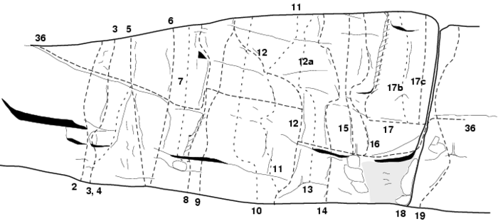

Lat: 59.05954 Long: 17.78189

Kanske Stockholms finaste och populäraste tradklippa, Grönbrink, ligger vid Fituna Gård i Nynäshamns Kommun.
I dagligt tal bara kallat för Fituna. Berget, beläget ovanför åkern strax öster om Fituna gård och väl synligt därifrån, har ett 30-tal leder och är en av Stockholms populäraste klätterklippor. Väggen, ca 100 m lång och 10–30 m hög, ger ett brant intryck och är speciellt i sin vänstra del ganska slät. Flera långa, både vertikala och horisontella sprickor korsar denna del av väggen men i övrigt är det tunt med större formationer. Högra delen av väggen är mera uppbruten och grepprik men har i gengäld något sämre klippa. De lägre delarna av väggen är dock skuggiga och mossiga och kan därför vara fuktiga långt efter det att de övre delarna har torkat upp.
Det här är klassisk terräng, med flera klassiska leder men också med krav på klassisk säkringsteknik. Om inte annat anges kan leden säkras tillfredsställande med små- och medelstora vajerkilar och friends. Ett antal fasta säkringar finns också, huvudsakligen på på de nyare lederna. Fin klättring, framför allt i graderna 5-6, klättring som ställer större krav på fotarbete och säkringsteknik än på biceps och snabba borrbultskopplingar.
Sydväst, undre halvan av väggen skuggig och fuktig efter regn, övre delen öppen för solen och torkar snabbt.
Se access nedan!
Åk väg 225 från Vårsta mot Nynäshamn. Sväng av mot Fituna Gård, det är skyltat Fituna och Båttrailers. För att parkera, kör in till vänster på sand/grusvägen i den första korsningen direkt nedanför stora backen. Kör fram till gläntan med det lutande trädet och parkera där. Följ sedan stigen/traktorvägen söderut förbi fyrvägskorsningen. När väg ansluter från höger ta den lilla (men tydliga) stigen rakt söderut in i skogen och mot berget.
Vid Grönbrinksberget får parkering ej ske vare sig på den plats som anges i Stockholmsföraren (1996) eller vid gula huset mittemot skolan. Ej heller bör man parkera vid stigens vägskäl, som förutsätter att man kört in i anslutning till villorna vid Furubo.
<div style="width: 355; float: right; margin-left: 10px; padding: 3px; border: solid 1px #cccccc;"> <googlemap width=350 height=300 lat="59.05954" lon="17.78189" zoom="14" type="map" controls="small"> 59.05954,17.78189,
Grönbrinksberget
</googlemap> </div>
<div style="float: right; margin-left: 10px;"> <slresa> titel=Gronbrinksberget lat=17781890 long=59059540 </slresa> </div>
Parkera
inte
framme vid husen, för då blir de boende sura, och
inte
på någon skogsväg för då blir bonden sur (och det är hans mark berget står på). Klarar vi detta har vi nog ingen problem med accessen till detta fina berg.
Nytt 2008!
Det byggs en ny sommarstuga nedanför berget. Den ligger under nedstigningsleden, varför det inte är så lämpligt att använda denna. Fira av från träden istället.
2008-07-13: Det är inga problem att använda nedstigningsleden, huset ligger en bra bit ned, gömt bakom träden. Man skymtar endast taket. Extra hänsyn rekommenderas dock, speciellt när det gäller ljudnivån.
2008-08-21 Var i kontakt med husägaren förra hösten för accesskomittens räkning. Husägaren visste att det klättrades på berget när han började bygga och såg inget problem med det. Han var positivt inställd till klättrare och hade bara haft problem ngn enstaka gång med folk som gick över hans tomt (alltså fel väg). Så instämmmer med föregående skribent: tänk på ljudnivån, lämna inget skräp, gå inte över tomten. Men använd gärna nedstigningsleden det är ju faktiskt säkraste vägen ner. //Ola Tuvesson
Från bergets topp, vänd dig utåt och följ bergskanten åt h. Denna övergår längre ned i en bred, svagt sluttande hylla. Fortsätt tills en avslutande, lätt klätterpassage tar dig ner till marken.
Lederna är beskrivna från v till h, som de dyker upp när man har kommit ner för nedstigningen och går längs klippan. Tv om nedstigningen fortsätter klippan med en del mindre väggar. Dessa ligger dock rakt ovanför sportstugorna och ägarna till dessa vill inte att vi klättrar där. Då utdelningen knappast står i proportion till obehaget vi åstadkommer och kan få är det bäst att vi håller oss borta.
Ovanför nedstigningshyllan finns en liten klippvägg som längre ner växer till ett kraftigare klipparti, ca 15m högt.
Th om kaminen reser sig en hög och brant vägg avbruten mitt på av en tydlig horisontell spricka. En tunn spricka går upp mitt på den övre väggen.
Kategori:Trad
Kategori:Saknar kolumner
Kategori:Stockholm
Kategori:Fituna